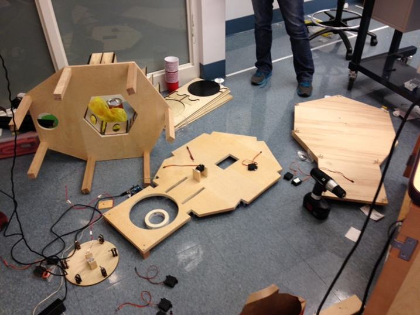

The mechanical system was designed with ease of assembly and with easily accessible components in mind. We wanted to ease maintenance if it was required and also try to make our project as aesthetically pleasing as possible. Initially the mechanical system of the Barbeaux consisted of five main components: the main structure/frame, the cup rotater, the fluid dispensing mechanism, the cup and ice dispensing system, and a rotating filled-drink storage platform.
We planned on assembling our frame out of aluminum bars with standard metal screws and “L” brackets. The frame would hold the bottles with the different liquids in a circular array above the other components and would be responsible for housing all of the components. The frame was designed with easy accessibility to all of the sub-components in case maintenance was required. One of the goals of the design was to allow each component to be installed without dependability on the other components. The cup rotater was responsible for helping transition the cup from the preparation position(underneath the bottles) to the release position in which the prepared cup with liquid would get released onto the storage platform. The fluid dispensing mechanism would be responsible for dispensing the different liquids into the cup. We were debating between using peristalsis pumps and solenoid valves but ultimately decided to use solenoid valves because of its ease of control. We used a scale along with the solenoid valves which allowed us to accurately determine how much of each ingredient is poured into our cup. Initially we wanted a cup and ice dispenser which was responsible for preparing and positioning a new cup for continuous drink making and keeping our drinks nice and cool. The filled-drink storage platform would constantly rotate and receive drinks after they are prepared.
As all first passes are flawed, we iterated to improve upon our current design based on the advice we received from the first design review. During this second phase of designing, we flushed out ideas which we ultimately kept for our final design. We improved our main structure and frame which had a more square design into a hexagonal design in order to keep the structure aesthetically pleasing while adding in more legs which we need to support the weight of the bottles.
Ultimately, we decided to work on the ice and cup dispensing at the end if our assembly worked as those were not part of our minimum deliverable. We initially had some design ideas but never fully flushed out any of them or felt confident in the design. In the end, we did not have a cup dispensing mechanism or a ice dispenser.
We ended up with three base plates on three different level. The lowest base plate will serve as the bottom of our structure in which the electronics will go on top of and serves as the actually base plate. The top most plate will have all the 6 bottles held in wooden bottle holders mounted in a hexagonal fashion. This allows all of the solenoid valves to point into the cup at the same time which makes ingredient control a simple matter of opening the different valves. The cup dispenser will also be attached to this topmost plate. The middle plate is about 1.5 inches above the bottom plate and a cut out for the storage plate and the scale will be in this plate. The cup rotater and a cup pusher will be mounted onto this middle plate. The rotating storage plate will be level with the top of this middle plate. About 6 one foot legs will hold the top plate in place. The scale will be held level to this middle plate by wooden blocks which essentially acts as standoffs.
The cup undergoes a few different phases as it enters into the Barbeaux. An empty cup is initially placed in the semi-circle of the cup rotater which is positioned in line with the cup pusher. As the process begins, this empty cup is rotated 180 degress by the cup rotater until it is on top of the scale. All of the solenoid valves will be pointed towards the middle of the cup. Once the appropriate amount of liquid is poured into this cup, the cup rotater will rotate back 180 degrees the opposite way which puts the cup back into its starting position. The cup then gets pushed onto he rotating platform by the cup pusher.
The cup rotater is a simple laser cut wooden rectangular plate with two semi circle cutouts on each end. The semi circles are meant to provide enough constraint to guide the cups along the surface. The rotation of this plate is provided by a servo as it only needs a 180 degree of motion. The servo is mounted onto the middle plate with two wooden supports fastened with screws.
The cup pusher mechanism is capable of smoothly pushing both full and empty cups. It consists of a layered pushing structure that is designed to contact the cup at two points to improve stability while pushing. The curved edge of the structure allows for increased contact with the cup, to further improve stability, and also guides any slightly off-center cups into the center of the pushing structure. This structure is actuated with a four bar linkage that is directly driven by a hobby servo connected to a pillow-block mounted shaft. The linkage allows for approximately four inches of displacement when the servo is driven from 0 to 150 degrees.
We designed the bottle holders to hold the bottles securely, be easily removable, be sturdy, and be elegant. We came up with a simple boxy-looking triangle where the bottle simply rests at an angle, pressing into a face plate with a hole for the solenoid valve.
The final destination for our cups was a rotating platter where the cup slowly moves in a circle until the customer decides to accept it. We went with a simple table-on-wheels design, where the table rests on six wheels and is powered at the center by a high-torque brushless gearmotor powered directly by the Arduino's 3.3 V port.
After we tested our assembly and made sure that everything worked together, we took apart the assembly and stained the different components individually. We used 2-3 coats on the different pieces depending on how they look.
The main plates were made out of 3/4" hard plywood. Although we had both a laser cutter and a water jet cutter at our fingertips, neither one of them had a cutting bed large enough for our plates. Therefore, the three main plates needed to be cut by hand. In order to get the most precise cuts possible, all of the drawing files were printed out on a 1:1 scale and taped to the wood, allowing us to cut the outer profile of the pieces pretty accurately with a band saw. For the internal and trickier cuts (like notches for the leg), we used a jigsaw for maximum maneuverability. In addition, since our CAD had all of the fasteners in it, we knew where all of the screws were going to be, so we marked them with a punch while the drawing was still taped to the wood. The edges of the drawing were taped to the wood, meaning that the paper would start to come loose after a few cuts, so we had to constantly re-tape the drawing on. It would have been easier to use a little bit of glue to secure the paper, but we were concerned that the glue would be harder to remove once we were done with the drawing.
The rest of the parts, minus the legs, were cut on an Epilog Legend 36EXT laser cutter. It was very simple to cut the parts, and they came out with beautiful curves; it allowed us to get the correct oval in the bottle holders and perfectly circular acrylic wheels for the rotating serving plate. It saved us a lot of time, especially since the 6 bottle holders, consisting of 7 pieces each, were all laser cut. Knowing that we wanted to use the laser cutter limited our choice of materials (because it cannot cut through wood thicker than 1/2"), but the trade-off was definitely in our favor.

When building a project with as many subsystems as Barbeaux, one should always plan on the order of how the components should be assembled before assembling the entire assembly. Although one of our initial goals was to allow for the Barbeaux to be easily accessible for replacement, it turns out it was not as easy as we thought. We ended up building the frame of the Barbeaux only to later have to take it apart in order to add in components. When building the Barbeaux(or any project in general) , the assembly process should be thought through well in order to save several hours of disassembling in order to add in one component.